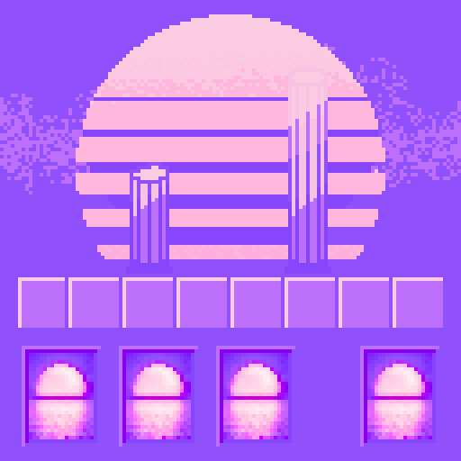
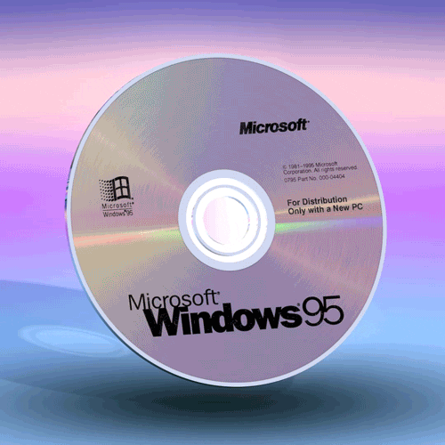
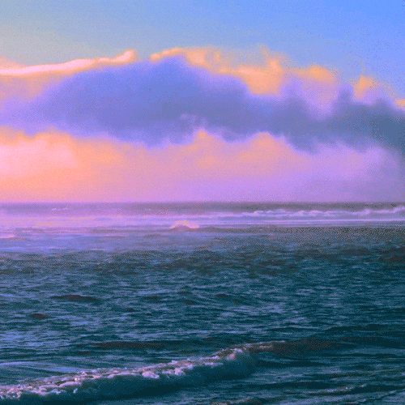
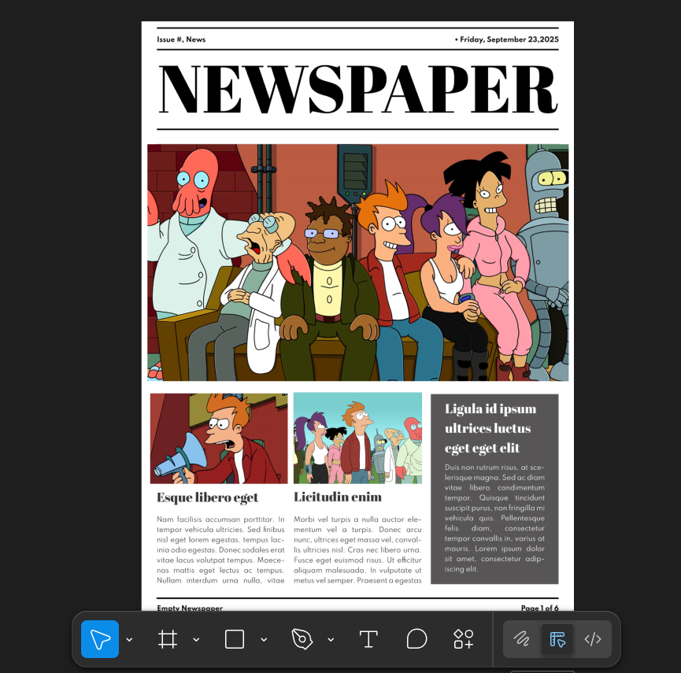

If you like pretty colors also I have a few more below
| Projects | Hobbies | About Me | Contact |
|---|---|---|---|
|
My y2k protfolio,
Futurama newspaper, Hacked skull's ascii art, Cold Ones art Gallery, Bioshock Ecommerce site, Star Wars fan page *More info about them below |
Games,
Coding, Exploring, Plants, Graphic Design |
I like Front End Development,
Arg's, Watches, Movies, Outdoors, Frutiger Aero aesthetic and Guinness |
example@email.com |
If you like pretty colors also I have a few more below

| Project Name | Description | Technologies Used |
|---|---|---|
| Y2K Portfolio | A simple portfolio website designed to look like it was made in the early 2000s. | HTML, CSS |
| Futurama Newspaper | A fan page dedicated to the animated TV show Futurama, featuring news stories and tic tac toe | HTML, CSS, JavaScript XML, React |
| Hacked Skull's Ascii Art | A collection of ascii art pieces that look like an old school terminal window | HTML, CSS, JavaScript XML, React |
| Cold Ones Art Gallery | A gallery of art pieces inspired by the popular YouTube channel Cold Ones | HTML, CSS, JavaScript XML, React |
| Bioshock Ecommerce Site | A mock ecommerce site faux selling plasmid and vigor's from the Bioshock video game series | HTML, CSS, JavaScript XML, React |
| Star Wars Fan Page | A fan page dedicated to the Star Wars franchise, featuring light saber combat styles and the franchise's history | HTML, CSS, JavaScript XML, React |


| What makes me so special |
|---|
|
I have years of experience in front-end development.
Some of my most used applications are HTML, CSS, JavaScript, React, Vite, Figma, WordPress, Canva, and Adobe Photoshop. |
The big goals I wanted to accomplish with this site are:
making a full functional website, making an e-commerce site for my bead making hobby,
and branching out to make more websites for the communities that I enjoy being a part of.
I enjoy the process of creating mockups for websites the most,
from the development of the website in Figma and Canva to making
the frontend in Vite as well as the frontend framework in React.

I learned to save…save…save. For all of my projects, I created a repository and ensured
to stay on top of all of the features for the websites that I am developing.
Thankfully, in my junior career, I have not had to deal with losing any of my work,
and it doesn’t matter how many branches and commits there are; I make sure to save, stage, and commit each time.